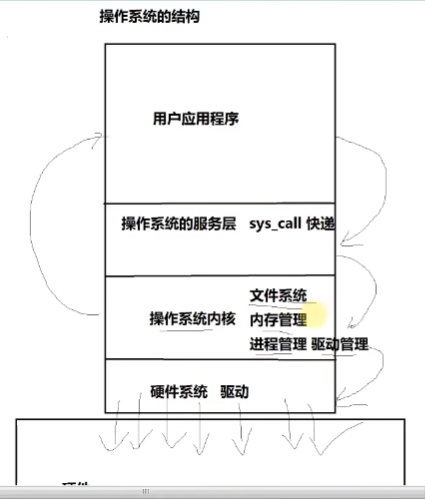
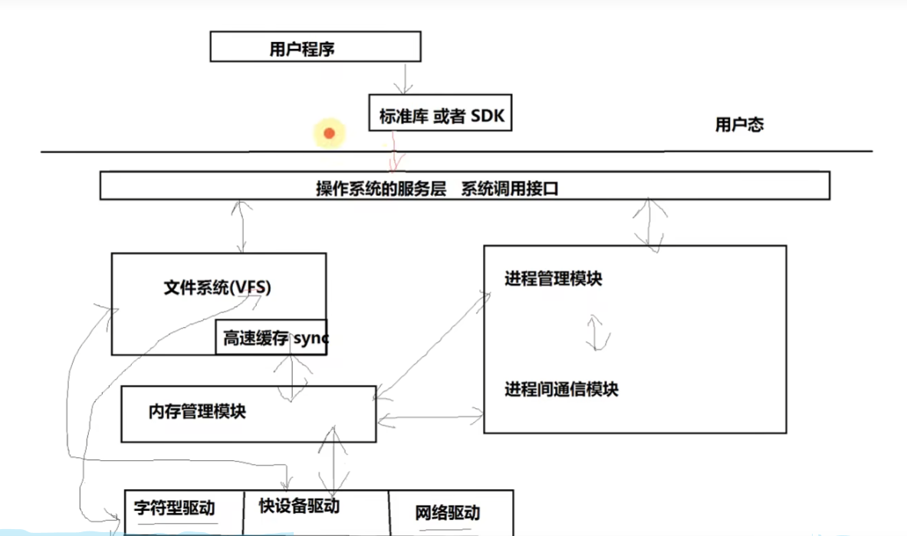
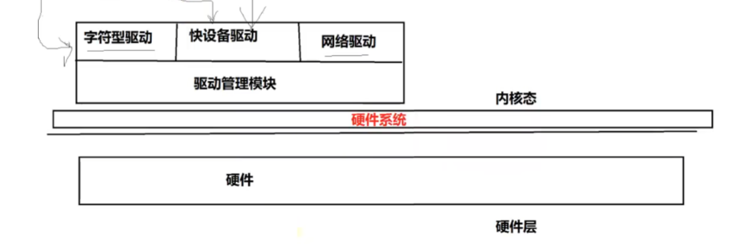
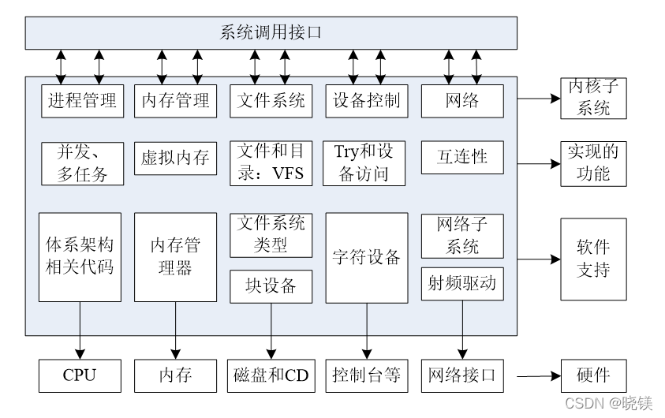

1. 目录
[TOC]
2. 操作系统工作方式（从一次调用来看）------纵向0层：
一次调用，从上到下:

底层：硬件
操作系统的工作方式:
1.把操作系统从用户态 切换到 内核态 (用户应用程序 到 内核的流程)
2.实现操作系统的系统调用(操作系统服务层)
3.应用操作系统提供的底层函数,进行功能实现
3.1 操作系统的驱动结构
4.推出后从内核态切换到用户态
3. 模块之间的关系（联系）：


高速缓存 其实就是一块内存。。。计算机写文件时，先存储在高速缓存里，最后一把写入硬件磁盘
4. 模块之间的独立性（割裂）
独立性：
注意区分：管理层与实现层
提供接口的，不实现；实现的，不提供接口
为什么要这样做呢？
易于维护和升级？？？？ https://www.bilibili.com/video/BV1tQ4y1d7mo?t=3147.4
高版本和低版本内核之间的区别：
1、内核驱动的管理模式并没有巨大的改变。一段时间3个阶段的跳段： 零散型 分层型 设备树
多的只是内核驱动的种类2、进程的管理方式并没有巨大的改变
进程的调度算法发生了改变
------> 总之，就是没有大的改变
技巧： 不变的看老版本 -------- 主
变化的，看新版本 -------- 次
5. linux kernel 功能划分图-----静态

Linux内核是linux操作系统的核心部分，它实现了操作系统的五大功能模块：
进程管理
文件系统
设备控制
网络
CD ------光盘
6. 中断
目的：为啥要有中断？ 1、硬件的中断响应 ----》 内核驱动的中断 2、系统调用的函数响应（sys_call） ----》 系统调用 3、自定义中断 ----》 软件的软中断模式 4、信号中断(kill-signalnum) ----》 进程间通信（有助于了解信号的使用、创建等） 5、系统的异常和错误 ----》 系统的异常获取；了解系统异常的作用 后面的章节，围绕着这五个目的6.1. Linux的中断机制
分类，自然：
硬件中断：比如：电脑主机的8259A类似的硬件中断控制芯片发出的中断、ARM中断控制器发出的中断
软件中断：异常：第一类：CPU 自行保留的中断 -------》 TODO: 不懂
系统调用异常
6.2. 中断工作流程
任意系统中断都有：
----------------保存-------------------------
做CPU工作模式的转化
进行寄存器的拷贝与压栈 -----> TODO: 这个目的是啥？
设置中断异常向量表
保存正常运行的函数返回值
------------------执行--------------------------
跳转到对应的中断服务函数上运行
------------------恢复-------------------------
进行模式的复原以及寄存器的复原
跳转回正常工作的函数地址继续运行
（对应video： https://www.bilibili.com/video/BV1tQ4y1d7mo?t=1252.7&p=2）
-------------> 总之，
字面上来看：
中断就是 中断CPU，做其他事情（运行中断服务函数）
6.3. linux中中断你的工作流程
---------------保存(中断前)-------------------------
1、将所有的寄存器值入栈 -----》 上面的保存
寄存器比如：
8086中的 SS EFLAGS ESP CS EIP（错误码）
ARM中的（r0-r15）
2、将异常码入栈（中断号）
3、将当前的函数返回值进行入栈(为了在中断执行后能够找到在哪中断的, 能够复原)
------------------执行(中断)--------------------------
4、调用对应的中断服务函数
------------------恢复(中断后)-------------------------
5、出栈函数返回值
6、返回所有入栈的寄存器值
6.3.1. 代码结构
重要代码结构：
| 保存过程（123），恢复过程（56） | 调用？ | 中断的执行过程（4） | |
|---|---|---|---|
| 硬件中断的处理过程 | asm.s | <---------> | traps.c |
| 软件及系统调用的处理过程 | system_call.s | <---------> | fork.c signal.c exit.c sys.c |
结论：
软中断和硬中断，完全两条路
系统调用 同 软中断
6.3.2. 中断的代码实现
以 asm.s ---》 traps.c为例：